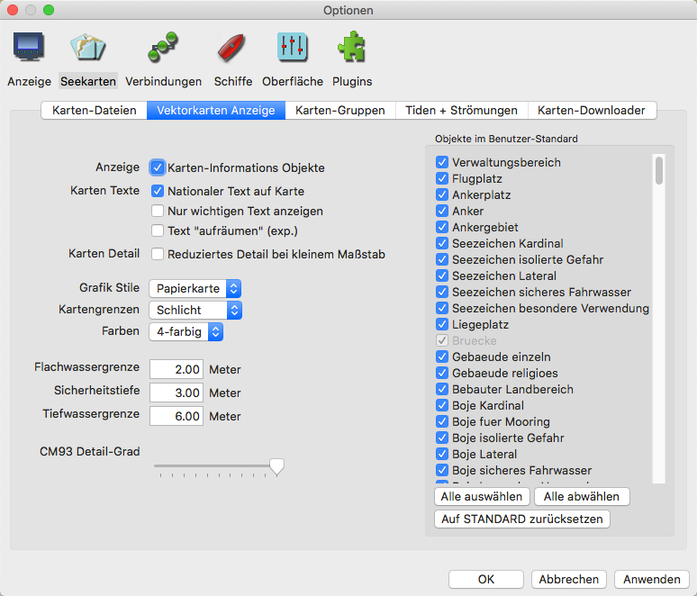
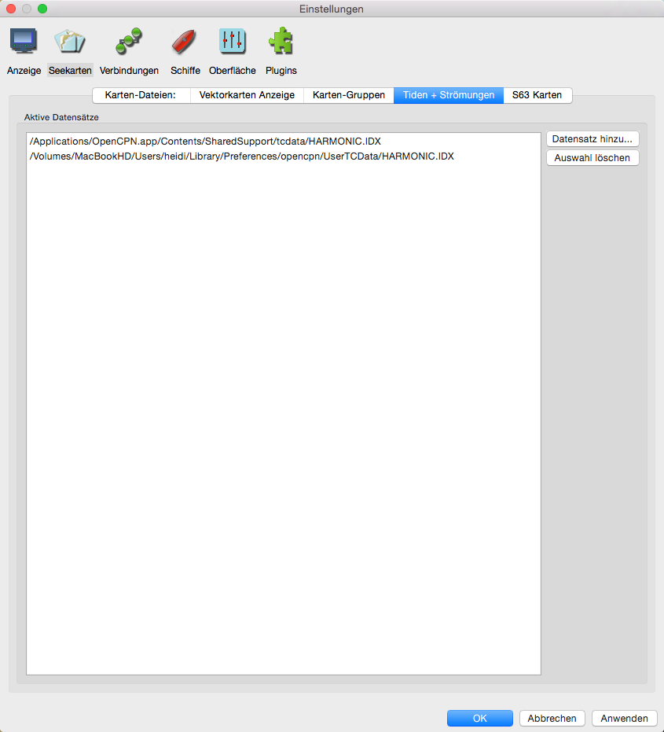

Einstellungen Seekarten
Lasche "Karten-Dateien:"

Das wird im Detail hier behandelt.
Lasche "Vektorkarten Anzeige"

Mehr über Vektorkarten siehe hier.
Lasche "Karten-Gruppen"

Mehr über Karten-Gruppen siehe hier.
Lasche "Tiden + Strömungen"

Aktive Datensätze Die verwendeten Tiden-/Stromdaten. Siehe unter Tiden und Strömungen. Zu dem mitgeliefertem Datensatz können mit dem Button "Datensatz hinzu..." weitere eigene Datensätze hinzugefügt werden. Es öffnet sich ein Datei-Fenster zur Auswahl der Datei.
Mehr über Tiden und Strömungen siehe hier.
Lasche "S63 Karten"
Diese Lasche erscheint nur, wenn das S63 Plugin aktiviert ist. Informationen zu S63 auf der o-charts.org Homepage.